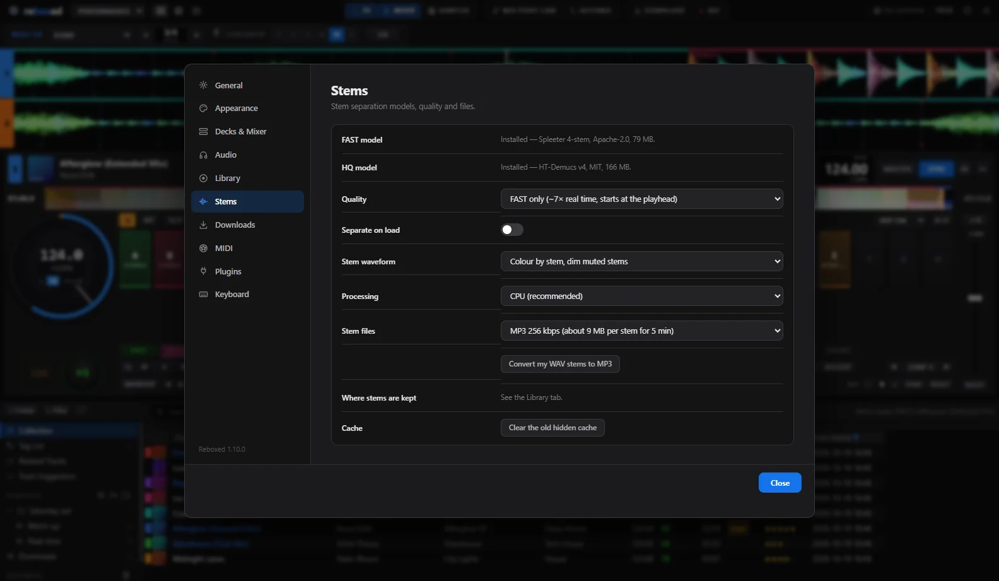

Deux moteurs
FAST tout de suite, HQ ensuite
- FAST (Spleeter) : environ 7× le temps réel. Démarre à la tête de lecture, utilisable dès le premier bloc.
- HQ (HT-Demucs) : meilleure séparation, en arrière-plan en mode auto.
- Couper d'un clic, solo avec Maj + clic, onde colorée par stem.
- Stems gardés en MP3 (environ 9 Mo par stem pour 5 min).
Modèles téléchargés au premier usage : FAST 79 Mo, HQ 166 Mo. Calcul sur le processeur, ou sur la carte graphique si elle est plus rapide (optionnel).


🎤Acapella
Isole la voix pour la poser sur un autre morceau.
🥁Batterie
Garde le beat d'un morceau, coupe sa mélodie.
🎛️Au contrôleur
Les pads et boutons de stems de ton contrôleur marchent comme dans rekordbox.